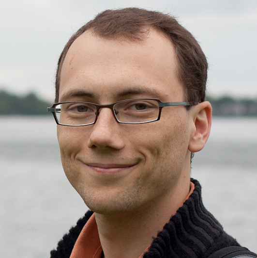

Vitaly Feldman
I'm a research scientist in the Theory Group at IBM Almaden Research Center.
Before joining IBM in Aug 2007 I spent 5 very enjoyable years at Harvard University as a PhD
student advised by Leslie Valiant and as a postdoc. Previously I studied at the Technion from which I received BA and MSc in CS (advised by Nader Bshouty) and worked at IBM Research in Haifa.
I serve as a director and treasurer on the steering committee of the Association for Computational Learning and as a chair of IBM Almaden's professional interest community (PIC) on Learning
Research
My research interests are primarily in computational and statistical aspects of Machine Learning Theory. Recent work focuses on developing foundations for adaptive data analysis, complexity of learning with constrained access to data, and privacy-preserving learning. I also work on understanding of natural learning systems: learning by the brain and evolution as learning.
Here are some of my recent works, slides/video for some recent talks, Ph.D. thesis and surveys and complete list of publications.
Recent/upcoming activities:
Recent/upcoming conference program committees:
- COLT 2016: Co-chair (with Sasha Rakhlin).
- COLT 2018, STOC 2018, NIPS 2017 , AISTATS 2017,
NIPS 2016,
IJCAI-ML 2015, ALT 2015, COLT 2015, ITCS 2015 , NIPS 2014, ALT 2014, COLT 2014 (publication chair).
Selected works (biased toward recent). Full list can be found here.
- Generalization for Adaptively-chosen Estimators via Stable Median.
With Thomas Steinke. COLT 2017 .
- A General Characterization of the Statistical Query Complexity.
COLT 2017 .
- On the Power of Learning from k-Wise Queries.
With Badih Ghazi. ITCS 2017 .
- Generalization of ERM in Stochastic Convex Optimization: The Dimension Strikes Back.
NIPS 2016 (oral presentation).
- Statistical Query Algorithms for Mean Vector Estimation and Stochastic Convex Optimization.
With Cristobal Guzman and Santosh Vempala. SODA 2017.
- The reusable holdout: Preserving validity in adaptive data analysis.
With Cynthia Dwork, Moritz Hardt, Toniann Pitassi, Omer Reingold and Aaron Roth. Science, 2015.
IBM Research 2015 Pat Goldberg Memorial Best Paper Award.
Based on STOC and NIPS papers below. See also my post on this work at IBM Research blog (republished by KDnuggets).
- Generalization in Adaptive Data Analysis and Holdout Reuse.
With Cynthia Dwork, Moritz Hardt, Toniann Pitassi, Omer Reingold and Aaron Roth. NIPS, 2015.
- Preserving Statistical Validity in Adaptive Data Analysis.
With Cynthia Dwork, Moritz Hardt, Toniann Pitassi, Omer Reingold and Aaron Roth. STOC 2015.
Invited to SICOMP special issue on STOC
- Tight Bounds on Low-degree Spectral Concentration of Submodular and XOS Functions.
With Jan Vondrak. FOCS 2015 .
- On the Complexity of Random Satisfiability Problems with Planted Solutions .
With Will Perkins and Santosh Vempala. STOC 2015 .
- Sample Complexity Bounds on Differentially Private Learning via Communication Complexity
.
With David Xiao. COLT 2014, SICOMP 2015.
- Statistical Active Learning Algorithms for Noise Tolerance and Differential Privacy.
With Nina Balcan. NIPS 2013 . Algorithmica. Special Issue on New Theoretical Challenges in Machine Learning
- Optimal Bounds on Approximation of Submodular and XOS Functions by Juntas.
With Jan Vondrak. FOCS 2013 . SICOMP 2016, Special issue on FOCS
- Learning using Local Membership Queries.
With Pranjal Awasthi and Varun Kanade. COLT 2013, Best Student (co-authored) Paper Award
- Statistical Algorithms and a Lower Bound for Detecting Planted Cliques.
With Elena Grigorescu, Lev Reyzin, Santosh Vempala and Ying Xiao. STOC 2013 . JACM 2017 .
- Nearly Optimal Solutions for the Chow Parameters Problem and Low-weight Approximation of Halfspaces.
With Anindya De, Ilias Diakonikolas and Rocco Servedio. STOC 2012; JACM 2014 .
IBM Research 2014 Pat Goldberg Memorial Best Paper Award.
- Distribution-Specific Agnostic Boosting.
ITCS (formerly ICS) 2010.
- A Complete Characterization of Statistical Query Learning with Applications to Evolvability.
FOCS 2009; JCSS 2012 (Special issue on Learning Theory).
- Experience-Induced Neural Circuits That Achieve High Capacity..
With Leslie Valiant. Neural Computation 21:10, 2009.
- New Results for Learning Noisy Parities and Halfspaces.
With Parikshit Gopalan, Subhash Khot, and Ashok Ponnuswami. FOCS 2006; SICOMP 2009, Special issue on FOCS
- Hardness of Approximate Two-level Logic Minimization and PAC Learning with Membership Queries.
STOC 2006; JCSS 75(1), 2009 (Special issue on Learning Theory)
- Attribute Efficient and Non-adaptive Learning of Parities and DNF Expressions.
COLT 2005, Best Student Paper Award; JMLR 2007, Special issue on COLT
- The Complexity of Properly Learning Simple Concept Classes.
With Misha Alekhnovich, Mark Braverman, Adam Klivans, and Toni Pitassi.
FOCS 2004; JCSS 74(1), 2008 (Special issue on Learning Theory)
Invited articles and surveys:
- Guilt-Free Data Reuse (copy).
With Cynthia Dwork, Moritz Hardt, Toniann Pitassi, Omer Reingold and Aaron Roth. Communications of the ACM (Research Highlights), 2017
- Hardness of Proper Learning.
The Encyclopedia of Algorithms. Springer-Verlag, 2015 (2nd ed.) and 2008 (1st ed.)
- Statistical Query Learning.
The Encyclopedia of Algorithms. Springer-Verlag, 2015 (2nd ed.) and 2008 (1st ed.)
- Structure and Learning of Valuation Functions
With Jan Vondrak. ACM SIGecom Exchanges 12.2
Ph.D. thesis: Efficiency and Computational Limitations of Learning Algorithms. Harvard University. January 2007
A bit more about me
I spend a lot of time in the wonderful company of Polina, Aviv and Milan.
I enjoy mountain biking, photography, ballroom dancing, skiing and drinking tea.